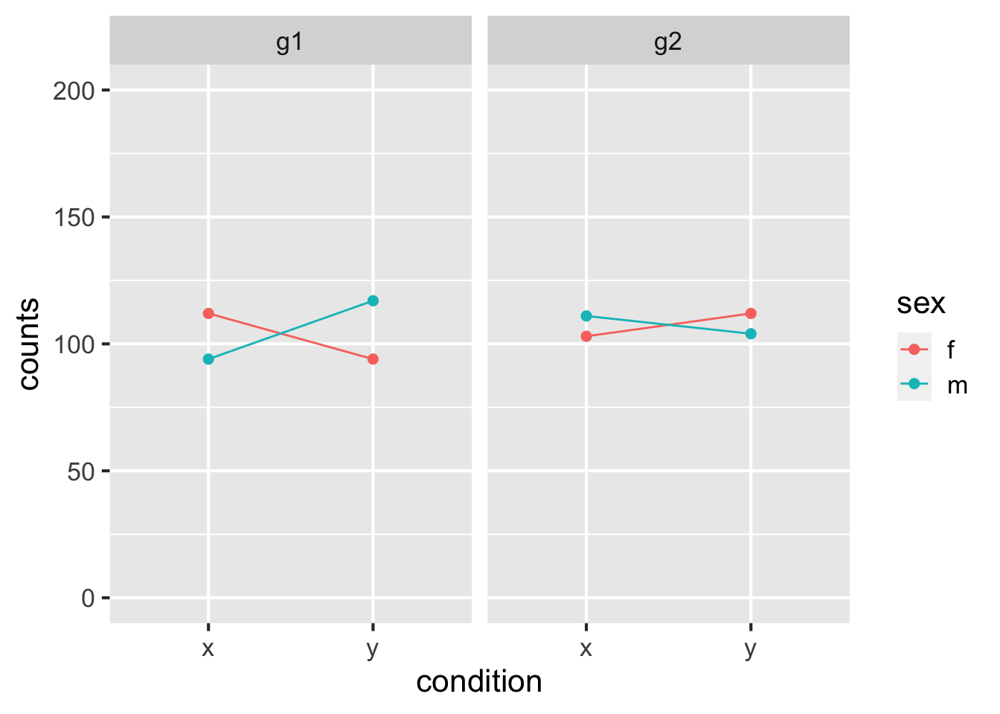
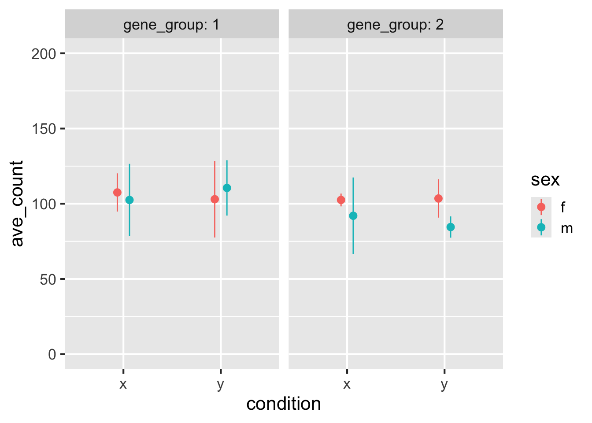
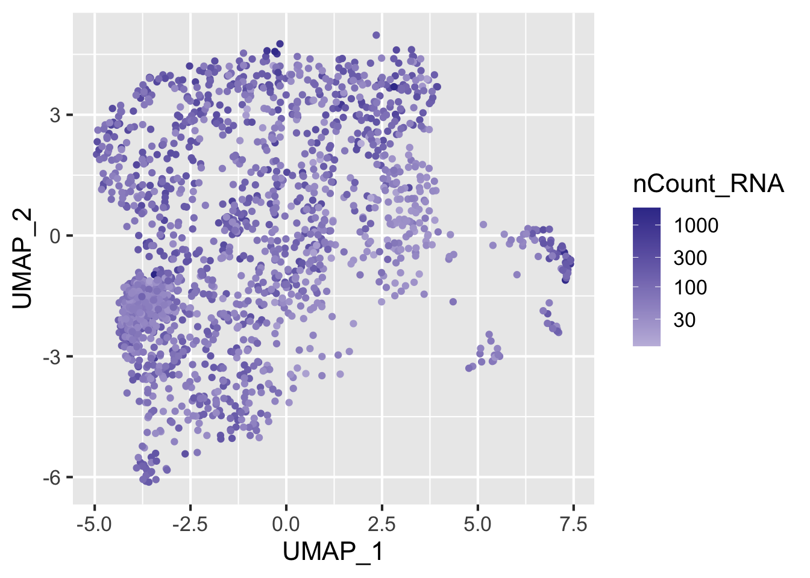
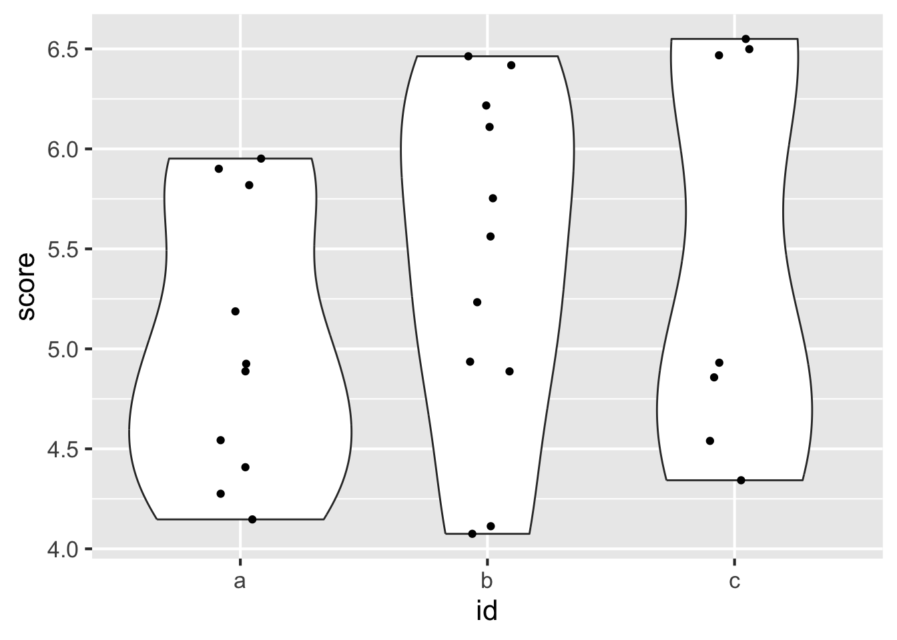
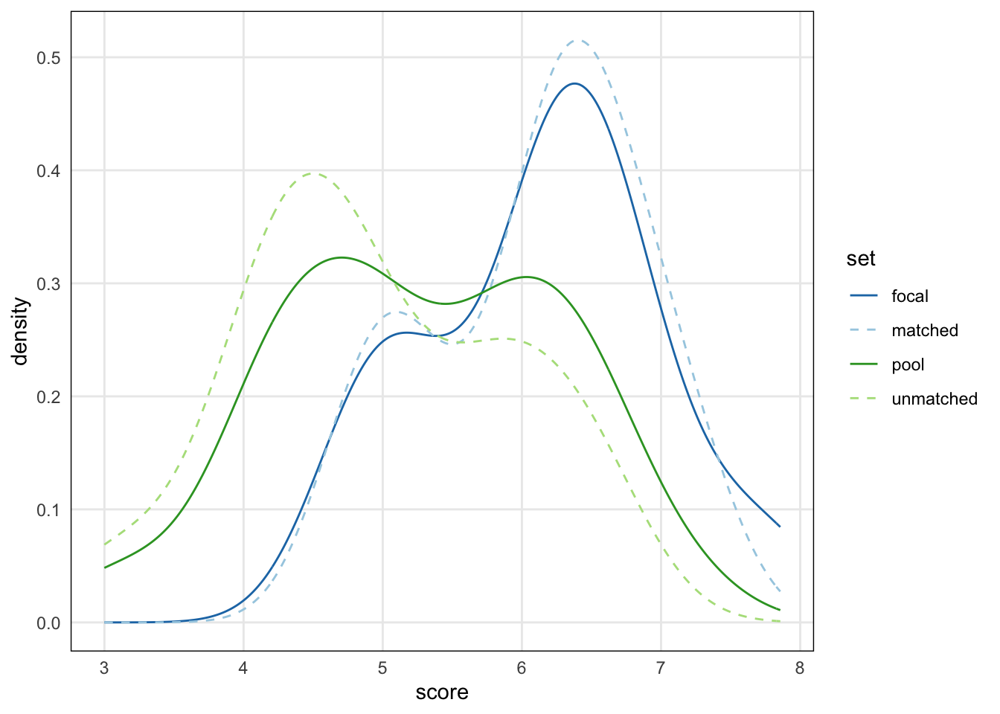
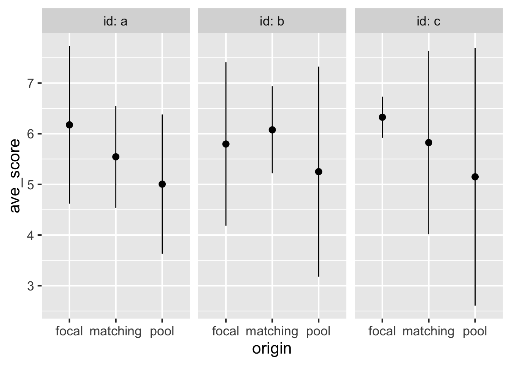

<!DOCTYPE html>
<html xmlns="http://www.w3.org/1999/xhtml" lang="en" xml:lang="en"><head>

<meta charset="utf-8">
<meta name="generator" content="quarto-1.3.353">

<meta name="viewport" content="width=device-width, initial-scale=1.0, user-scalable=yes">

<meta name="author" content="Michael Love">

<title>Tidy Intro Talk</title>
<style>
code{white-space: pre-wrap;}
span.smallcaps{font-variant: small-caps;}
div.columns{display: flex; gap: min(4vw, 1.5em);}
div.column{flex: auto; overflow-x: auto;}
div.hanging-indent{margin-left: 1.5em; text-indent: -1.5em;}
ul.task-list{list-style: none;}
ul.task-list li input[type="checkbox"] {
  width: 0.8em;
  margin: 0 0.8em 0.2em -1em; /* quarto-specific, see https://github.com/quarto-dev/quarto-cli/issues/4556 */ 
  vertical-align: middle;
}
/* CSS for syntax highlighting */
pre > code.sourceCode { white-space: pre; position: relative; }
pre > code.sourceCode > span { display: inline-block; line-height: 1.25; }
pre > code.sourceCode > span:empty { height: 1.2em; }
.sourceCode { overflow: visible; }
code.sourceCode > span { color: inherit; text-decoration: inherit; }
div.sourceCode { margin: 1em 0; }
pre.sourceCode { margin: 0; }
@media screen {
div.sourceCode { overflow: auto; }
}
@media print {
pre > code.sourceCode { white-space: pre-wrap; }
pre > code.sourceCode > span { text-indent: -5em; padding-left: 5em; }
}
pre.numberSource code
  { counter-reset: source-line 0; }
pre.numberSource code > span
  { position: relative; left: -4em; counter-increment: source-line; }
pre.numberSource code > span > a:first-child::before
  { content: counter(source-line);
    position: relative; left: -1em; text-align: right; vertical-align: baseline;
    border: none; display: inline-block;
    -webkit-touch-callout: none; -webkit-user-select: none;
    -khtml-user-select: none; -moz-user-select: none;
    -ms-user-select: none; user-select: none;
    padding: 0 4px; width: 4em;
  }
pre.numberSource { margin-left: 3em;  padding-left: 4px; }
div.sourceCode
  {   }
@media screen {
pre > code.sourceCode > span > a:first-child::before { text-decoration: underline; }
}
</style>


<script src="site_libs/quarto-nav/quarto-nav.js"></script>
<script src="site_libs/clipboard/clipboard.min.js"></script>
<script src="site_libs/quarto-search/autocomplete.umd.js"></script>
<script src="site_libs/quarto-search/fuse.min.js"></script>
<script src="site_libs/quarto-search/quarto-search.js"></script>
<meta name="quarto:offset" content="./">
<script src="site_libs/quarto-html/quarto.js"></script>
<script src="site_libs/quarto-html/popper.min.js"></script>
<script src="site_libs/quarto-html/tippy.umd.min.js"></script>
<script src="site_libs/quarto-html/anchor.min.js"></script>
<link href="site_libs/quarto-html/tippy.css" rel="stylesheet">
<link href="site_libs/quarto-html/quarto-syntax-highlighting.css" rel="stylesheet" id="quarto-text-highlighting-styles">
<script src="site_libs/bootstrap/bootstrap.min.js"></script>
<link href="site_libs/bootstrap/bootstrap-icons.css" rel="stylesheet">
<link href="site_libs/bootstrap/bootstrap.min.css" rel="stylesheet" id="quarto-bootstrap" data-mode="light">
<script id="quarto-search-options" type="application/json">{
  "location": "sidebar",
  "copy-button": false,
  "collapse-after": 3,
  "panel-placement": "start",
  "type": "textbox",
  "limit": 20,
  "language": {
    "search-no-results-text": "No results",
    "search-matching-documents-text": "matching documents",
    "search-copy-link-title": "Copy link to search",
    "search-hide-matches-text": "Hide additional matches",
    "search-more-match-text": "more match in this document",
    "search-more-matches-text": "more matches in this document",
    "search-clear-button-title": "Clear",
    "search-detached-cancel-button-title": "Cancel",
    "search-submit-button-title": "Submit"
  }
}</script>


</head>

<body class="fullcontent">

<div id="quarto-search-results"></div>
<!-- content -->
<div id="quarto-content" class="quarto-container page-columns page-rows-contents page-layout-article">
<!-- sidebar -->
<!-- margin-sidebar -->
    
<!-- main -->
<main class="content" id="quarto-document-content">

<header id="title-block-header" class="quarto-title-block default">
<div class="quarto-title">
<h1 class="title">Tidy Intro Talk</h1>
</div>


<div class="quarto-title-meta">

    <div>
    <div class="quarto-title-meta-heading">Author</div>
    <div class="quarto-title-meta-contents">
             <p>Michael Love </p>
          </div>
  </div>
    
  
    
  </div>
  

</header>

<section id="tidyomics-project" class="level2">
<h2 class="anchored" data-anchor-id="tidyomics-project">Tidyomics project</h2>
<p>An open, open-source project spanning multiple R packages, and developers from around the world. Organized as a GitHub organization with GitHub Projects. For more:</p>
<ul>
<li><p><a href="https://github.com/tidyomics" class="uri">https://github.com/tidyomics</a></p></li>
<li><p><a href="https://www.biorxiv.org/content/10.1101/2023.09.10.557072v2" class="uri">https://www.biorxiv.org/content/10.1101/2023.09.10.557072v2</a></p></li>
<li><p><code>tidiness_in_bioc</code> channel in Bioconductor Slack</p></li>
</ul>
</section>
<section id="diagram-of-the-tidyomics-project" class="level2">
<h2 class="anchored" data-anchor-id="diagram-of-the-tidyomics-project">Diagram of the tidyomics project</h2>
<p></p>
</section>
<section id="objects-keep-data-organized" class="level2">
<h2 class="anchored" data-anchor-id="objects-keep-data-organized">Objects keep data organized</h2>
<ul>
<li><p>We typically have more information than just a matrix</p></li>
<li><p>Row and column information (on features and samples)</p></li>
<li><p>Metadata on organism, genome build, annotation release, etc.</p></li>
<li><p>Keeping this information altogether is the motivation for <em>data objects</em></p></li>
<li><p>Many functions in Bioconductor are <em>endomorphic</em> meaning that an object is passed in, some data may be added/modified, then the object is passed back out</p></li>
</ul>
<p>I will first introduce one of the main data objects in Bioconductor, the <em>SummarizedExperiment</em>.</p>
<p>After introducing this, I’ll motivate <code>tidyomics</code> as applied to Bioconductor objects.</p>
<p>A <em>SummarizedExperiment</em> is built from three tables:</p>
<div class="cell">
<div class="sourceCode cell-code" id="cb1"><pre class="sourceCode r code-with-copy"><code class="sourceCode r"><span id="cb1-1"><a href="#cb1-1" aria-hidden="true" tabindex="-1"></a><span class="fu">library</span>(SummarizedExperiment)</span>
<span id="cb1-2"><a href="#cb1-2" aria-hidden="true" tabindex="-1"></a><span class="co"># metadata about genes</span></span>
<span id="cb1-3"><a href="#cb1-3" aria-hidden="true" tabindex="-1"></a>genes <span class="ot">&lt;-</span> <span class="fu">DataFrame</span>(</span>
<span id="cb1-4"><a href="#cb1-4" aria-hidden="true" tabindex="-1"></a>  <span class="at">id =</span> <span class="fu">c</span>(<span class="st">"g1"</span>,<span class="st">"g2"</span>,<span class="st">"g3"</span>,<span class="st">"g4"</span>), </span>
<span id="cb1-5"><a href="#cb1-5" aria-hidden="true" tabindex="-1"></a>  <span class="at">symbol =</span> <span class="fu">c</span>(<span class="st">"ABC"</span>,<span class="st">"DEF"</span>,<span class="st">"GHI"</span>,<span class="st">"JKL"</span>)</span>
<span id="cb1-6"><a href="#cb1-6" aria-hidden="true" tabindex="-1"></a>  )</span>
<span id="cb1-7"><a href="#cb1-7" aria-hidden="true" tabindex="-1"></a>genes</span></code><button title="Copy to Clipboard" class="code-copy-button"><i class="bi"></i></button></pre></div>
<div class="cell-output cell-output-stdout">
<pre><code>DataFrame with 4 rows and 2 columns
           id      symbol
  &lt;character&gt; &lt;character&gt;
1          g1         ABC
2          g2         DEF
3          g3         GHI
4          g4         JKL</code></pre>
</div>
</div>
<div class="cell">
<div class="sourceCode cell-code" id="cb3"><pre class="sourceCode r code-with-copy"><code class="sourceCode r"><span id="cb3-1"><a href="#cb3-1" aria-hidden="true" tabindex="-1"></a><span class="co"># metadata about samples</span></span>
<span id="cb3-2"><a href="#cb3-2" aria-hidden="true" tabindex="-1"></a>samples <span class="ot">&lt;-</span> <span class="fu">DataFrame</span>(</span>
<span id="cb3-3"><a href="#cb3-3" aria-hidden="true" tabindex="-1"></a>  <span class="at">sample =</span> <span class="fu">c</span>(<span class="st">"s1"</span>,<span class="st">"s2"</span>,<span class="st">"s3"</span>,<span class="st">"s4"</span>),</span>
<span id="cb3-4"><a href="#cb3-4" aria-hidden="true" tabindex="-1"></a>  <span class="at">condition =</span> <span class="fu">c</span>(<span class="st">"x"</span>,<span class="st">"y"</span>,<span class="st">"x"</span>,<span class="st">"y"</span>),</span>
<span id="cb3-5"><a href="#cb3-5" aria-hidden="true" tabindex="-1"></a>  <span class="at">sex =</span> <span class="fu">c</span>(<span class="st">"m"</span>,<span class="st">"m"</span>,<span class="st">"f"</span>,<span class="st">"f"</span>)</span>
<span id="cb3-6"><a href="#cb3-6" aria-hidden="true" tabindex="-1"></a>  )</span>
<span id="cb3-7"><a href="#cb3-7" aria-hidden="true" tabindex="-1"></a>samples</span></code><button title="Copy to Clipboard" class="code-copy-button"><i class="bi"></i></button></pre></div>
<div class="cell-output cell-output-stdout">
<pre><code>DataFrame with 4 rows and 3 columns
       sample   condition         sex
  &lt;character&gt; &lt;character&gt; &lt;character&gt;
1          s1           x           m
2          s2           y           m
3          s3           x           f
4          s4           y           f</code></pre>
</div>
</div>
<div class="cell">
<div class="sourceCode cell-code" id="cb5"><pre class="sourceCode r code-with-copy"><code class="sourceCode r"><span id="cb5-1"><a href="#cb5-1" aria-hidden="true" tabindex="-1"></a><span class="fu">set.seed</span>(<span class="dv">123</span>) <span class="co"># some random count data</span></span>
<span id="cb5-2"><a href="#cb5-2" aria-hidden="true" tabindex="-1"></a>counts <span class="ot">&lt;-</span> <span class="fu">matrix</span>(<span class="fu">rpois</span>(<span class="dv">16</span>, <span class="at">lambda=</span><span class="dv">100</span>), <span class="at">ncol=</span><span class="dv">4</span>)</span>
<span id="cb5-3"><a href="#cb5-3" aria-hidden="true" tabindex="-1"></a><span class="fu">rownames</span>(counts) <span class="ot">&lt;-</span> genes<span class="sc">$</span>id</span>
<span id="cb5-4"><a href="#cb5-4" aria-hidden="true" tabindex="-1"></a><span class="fu">colnames</span>(counts) <span class="ot">&lt;-</span> samples<span class="sc">$</span>sample</span>
<span id="cb5-5"><a href="#cb5-5" aria-hidden="true" tabindex="-1"></a>counts</span></code><button title="Copy to Clipboard" class="code-copy-button"><i class="bi"></i></button></pre></div>
<div class="cell-output cell-output-stdout">
<pre><code>    s1  s2  s3  s4
g1  94 117 112  94
g2 111 104 103 112
g3  83  87 104 108
g4 101  82 101  99</code></pre>
</div>
</div>
<div class="cell">
<div class="sourceCode cell-code" id="cb7"><pre class="sourceCode r code-with-copy"><code class="sourceCode r"><span id="cb7-1"><a href="#cb7-1" aria-hidden="true" tabindex="-1"></a>se <span class="ot">&lt;-</span> <span class="fu">SummarizedExperiment</span>(</span>
<span id="cb7-2"><a href="#cb7-2" aria-hidden="true" tabindex="-1"></a>  <span class="at">assays =</span> <span class="fu">list</span>(<span class="at">counts =</span> counts),</span>
<span id="cb7-3"><a href="#cb7-3" aria-hidden="true" tabindex="-1"></a>  <span class="at">rowData =</span> genes, </span>
<span id="cb7-4"><a href="#cb7-4" aria-hidden="true" tabindex="-1"></a>  <span class="at">colData =</span> samples,</span>
<span id="cb7-5"><a href="#cb7-5" aria-hidden="true" tabindex="-1"></a>  <span class="at">metadata =</span> <span class="fu">list</span>(<span class="at">organism=</span><span class="st">"Hsapiens"</span>)</span>
<span id="cb7-6"><a href="#cb7-6" aria-hidden="true" tabindex="-1"></a>  )</span>
<span id="cb7-7"><a href="#cb7-7" aria-hidden="true" tabindex="-1"></a>se</span></code><button title="Copy to Clipboard" class="code-copy-button"><i class="bi"></i></button></pre></div>
<div class="cell-output cell-output-stdout">
<pre><code>class: SummarizedExperiment 
dim: 4 4 
metadata(1): organism
assays(1): counts
rownames(4): g1 g2 g3 g4
rowData names(2): id symbol
colnames(4): s1 s2 s3 s4
colData names(3): sample condition sex</code></pre>
</div>
</div>
</section>
<section id="avoid-common-bookkeeping-errors" class="level2">
<h2 class="anchored" data-anchor-id="avoid-common-bookkeeping-errors">Avoid common bookkeeping errors</h2>
<p>Reordering samples (columns) is a global operation:</p>
<div class="cell">
<div class="sourceCode cell-code" id="cb9"><pre class="sourceCode r code-with-copy"><code class="sourceCode r"><span id="cb9-1"><a href="#cb9-1" aria-hidden="true" tabindex="-1"></a>se2 <span class="ot">&lt;-</span> se[,<span class="fu">c</span>(<span class="dv">1</span>,<span class="dv">3</span>,<span class="dv">2</span>,<span class="dv">4</span>)]</span>
<span id="cb9-2"><a href="#cb9-2" aria-hidden="true" tabindex="-1"></a><span class="fu">assay</span>(se2, <span class="st">"counts"</span>)</span></code><button title="Copy to Clipboard" class="code-copy-button"><i class="bi"></i></button></pre></div>
<div class="cell-output cell-output-stdout">
<pre><code>    s1  s3  s2  s4
g1  94 112 117  94
g2 111 103 104 112
g3  83 104  87 108
g4 101 101  82  99</code></pre>
</div>
<div class="sourceCode cell-code" id="cb11"><pre class="sourceCode r code-with-copy"><code class="sourceCode r"><span id="cb11-1"><a href="#cb11-1" aria-hidden="true" tabindex="-1"></a><span class="fu">colData</span>(se2)</span></code><button title="Copy to Clipboard" class="code-copy-button"><i class="bi"></i></button></pre></div>
<div class="cell-output cell-output-stdout">
<pre><code>DataFrame with 4 rows and 3 columns
        sample   condition         sex
   &lt;character&gt; &lt;character&gt; &lt;character&gt;
s1          s1           x           m
s3          s3           x           f
s2          s2           y           m
s4          s4           y           f</code></pre>
</div>
</div>
<p>Assignment that might result in sample swap results in an error:</p>
<div class="cell">
<div class="sourceCode cell-code" id="cb13"><pre class="sourceCode r code-with-copy"><code class="sourceCode r"><span id="cb13-1"><a href="#cb13-1" aria-hidden="true" tabindex="-1"></a><span class="fu">assay</span>(se2) <span class="ot">&lt;-</span> counts</span>
<span id="cb13-2"><a href="#cb13-2" aria-hidden="true" tabindex="-1"></a><span class="co"># Error:</span></span>
<span id="cb13-3"><a href="#cb13-3" aria-hidden="true" tabindex="-1"></a><span class="co"># please use 'assay(x, withDimnames=FALSE)) &lt;- value' or </span></span>
<span id="cb13-4"><a href="#cb13-4" aria-hidden="true" tabindex="-1"></a><span class="co"># 'assays(x, withDimnames=FALSE)) &lt;- value'</span></span>
<span id="cb13-5"><a href="#cb13-5" aria-hidden="true" tabindex="-1"></a><span class="co"># when the rownames or colnames of the supplied assay(s) are not </span></span>
<span id="cb13-6"><a href="#cb13-6" aria-hidden="true" tabindex="-1"></a><span class="co"># identical to those of the receiving  SummarizedExperiment object 'x'</span></span></code><button title="Copy to Clipboard" class="code-copy-button"><i class="bi"></i></button></pre></div>
</div>
<p>Other such validity checks include comparison of genomic ranges across different genome builds: will result in an error.</p>
</section>
<section id="can-be-hard-for-new-users" class="level2">
<h2 class="anchored" data-anchor-id="can-be-hard-for-new-users">Can be hard for new users</h2>
<div class="cell">
<div class="sourceCode cell-code" id="cb14"><pre class="sourceCode r code-with-copy"><code class="sourceCode r"><span id="cb14-1"><a href="#cb14-1" aria-hidden="true" tabindex="-1"></a><span class="fu">slotNames</span>(se)</span></code><button title="Copy to Clipboard" class="code-copy-button"><i class="bi"></i></button></pre></div>
<div class="cell-output cell-output-stdout">
<pre><code>[1] "colData"         "assays"          "NAMES"           "elementMetadata" "metadata"       </code></pre>
</div>
<div class="sourceCode cell-code" id="cb16"><pre class="sourceCode r code-with-copy"><code class="sourceCode r"><span id="cb16-1"><a href="#cb16-1" aria-hidden="true" tabindex="-1"></a><span class="fu">methods</span>(<span class="at">class =</span> <span class="fu">class</span>(se))</span></code><button title="Copy to Clipboard" class="code-copy-button"><i class="bi"></i></button></pre></div>
<div class="cell-output cell-output-stdout">
<pre><code>  [1] !=                    [                     [[                    [[&lt;-                 
  [5] [&lt;-                   %in%                  &lt;                     &lt;=                   
  [9] ==                    &gt;                     &gt;=                    $                    
 [13] $&lt;-                   aggregate             anyDuplicated         anyNA                
 [17] append                as.character          as.complex            as.data.frame        
 [21] as.env                as.integer            as.list               as.logical           
 [25] as.matrix             as.numeric            as.raw                assay                
 [29] assay&lt;-               assayNames            assayNames&lt;-          assays               
 [33] assays&lt;-              bindROWS              by                    c                    
 [37] cbind                 coerce                coerce&lt;-              colData              
 [41] colData&lt;-             colnames              combineCols           combineRows          
 [45] countOverlaps         dim                   dimnames              dimnames&lt;-           
 [49] duplicated            elementMetadata       elementMetadata&lt;-     eval                 
 [53] expand                expand.grid           extractROWS           FactorToClass        
 [57] findOverlaps          head                  horizontal_slot_names intersect            
 [61] is.na                 length                lengths               match                
 [65] mcols                 mcols&lt;-               merge                 mergeROWS            
 [69] metadata              metadata&lt;-            mstack                names                
 [73] names&lt;-               ncol                  nrow                  overlapsAny          
 [77] parallel_slot_names   rank                  rbind                 realize              
 [81] relist                rename                rep                   rep.int              
 [85] replaceROWS           rev                   rowData               rowData&lt;-            
 [89] ROWNAMES              rownames              ROWNAMES&lt;-            rowRanges            
 [93] rowRanges&lt;-           selfmatch             seqlevelsInUse        setdiff              
 [97] setequal              shiftApply            show                  showAsCell           
[101] sort                  split                 split&lt;-               subset               
[105] subsetByOverlaps      summary               table                 tail                 
[109] tapply                transform             union                 unique               
[113] updateObject          values                values&lt;-              vertical_slot_names  
[117] window                window&lt;-              with                  xtabs                
[121] xtfrm                
see '?methods' for accessing help and source code</code></pre>
</div>
</div>
</section>
<section id="many-beginners-know-dplyrggplot2" class="level2">
<h2 class="anchored" data-anchor-id="many-beginners-know-dplyrggplot2">Many beginners know <code>dplyr</code>/<code>ggplot2</code></h2>
<div class="cell">
<div class="sourceCode cell-code" id="cb18"><pre class="sourceCode r code-with-copy"><code class="sourceCode r"><span id="cb18-1"><a href="#cb18-1" aria-hidden="true" tabindex="-1"></a><span class="fu">library</span>(dplyr)</span>
<span id="cb18-2"><a href="#cb18-2" aria-hidden="true" tabindex="-1"></a><span class="co"># filter to samples in condition 'x'</span></span>
<span id="cb18-3"><a href="#cb18-3" aria-hidden="true" tabindex="-1"></a>samples <span class="sc">|&gt;</span> </span>
<span id="cb18-4"><a href="#cb18-4" aria-hidden="true" tabindex="-1"></a>  <span class="fu">as_tibble</span>() <span class="sc">|&gt;</span> </span>
<span id="cb18-5"><a href="#cb18-5" aria-hidden="true" tabindex="-1"></a>  <span class="fu">filter</span>(condition <span class="sc">==</span> <span class="st">"x"</span>)</span></code><button title="Copy to Clipboard" class="code-copy-button"><i class="bi"></i></button></pre></div>
<div class="cell-output cell-output-stdout">
<pre><code># A tibble: 2 × 3
  sample condition sex  
  &lt;chr&gt;  &lt;chr&gt;     &lt;chr&gt;
1 s1     x         m    
2 s3     x         f    </code></pre>
</div>
</div>
</section>
<section id="enabling-dplyr-verbs-for-omics" class="level2">
<h2 class="anchored" data-anchor-id="enabling-dplyr-verbs-for-omics">Enabling dplyr verbs for omics</h2>
<div class="cell">
<div class="sourceCode cell-code" id="cb20"><pre class="sourceCode r code-with-copy"><code class="sourceCode r"><span id="cb20-1"><a href="#cb20-1" aria-hidden="true" tabindex="-1"></a><span class="fu">library</span>(tidySummarizedExperiment)</span>
<span id="cb20-2"><a href="#cb20-2" aria-hidden="true" tabindex="-1"></a>se</span></code><button title="Copy to Clipboard" class="code-copy-button"><i class="bi"></i></button></pre></div>
<div class="cell-output cell-output-stdout">
<pre><code># A SummarizedExperiment-tibble abstraction: 16 × 8
# Features=4 | Samples=4 | Assays=counts
   .feature .sample counts sample condition sex   id    symbol
   &lt;chr&gt;    &lt;chr&gt;    &lt;int&gt; &lt;chr&gt;  &lt;chr&gt;     &lt;chr&gt; &lt;chr&gt; &lt;chr&gt; 
 1 g1       s1          94 s1     x         m     g1    ABC   
 2 g2       s1         111 s1     x         m     g2    DEF   
 3 g3       s1          83 s1     x         m     g3    GHI   
 4 g4       s1         101 s1     x         m     g4    JKL   
 5 g1       s2         117 s2     y         m     g1    ABC   
 6 g2       s2         104 s2     y         m     g2    DEF   
 7 g3       s2          87 s2     y         m     g3    GHI   
 8 g4       s2          82 s2     y         m     g4    JKL   
 9 g1       s3         112 s3     x         f     g1    ABC   
10 g2       s3         103 s3     x         f     g2    DEF   
11 g3       s3         104 s3     x         f     g3    GHI   
12 g4       s3         101 s3     x         f     g4    JKL   
13 g1       s4          94 s4     y         f     g1    ABC   
14 g2       s4         112 s4     y         f     g2    DEF   
15 g3       s4         108 s4     y         f     g3    GHI   
16 g4       s4          99 s4     y         f     g4    JKL   </code></pre>
</div>
</div>
<p>What does this mean “<em>SE-tibble abstraction</em>”?</p>
<p>Essentially this is an API, we can use our familiar verbs and interact with the native object.</p>
<p></p>
</section>
<section id="still-a-standard-bioc-object" class="level2">
<h2 class="anchored" data-anchor-id="still-a-standard-bioc-object">Still a standard Bioc object</h2>
<div class="cell">
<div class="sourceCode cell-code" id="cb22"><pre class="sourceCode r code-with-copy"><code class="sourceCode r"><span id="cb22-1"><a href="#cb22-1" aria-hidden="true" tabindex="-1"></a><span class="fu">class</span>(se)</span></code><button title="Copy to Clipboard" class="code-copy-button"><i class="bi"></i></button></pre></div>
<div class="cell-output cell-output-stdout">
<pre><code>[1] "SummarizedExperiment"
attr(,"package")
[1] "SummarizedExperiment"</code></pre>
</div>
<div class="sourceCode cell-code" id="cb24"><pre class="sourceCode r code-with-copy"><code class="sourceCode r"><span id="cb24-1"><a href="#cb24-1" aria-hidden="true" tabindex="-1"></a><span class="fu">dim</span>(se)</span></code><button title="Copy to Clipboard" class="code-copy-button"><i class="bi"></i></button></pre></div>
<div class="cell-output cell-output-stdout">
<pre><code>[1] 4 4</code></pre>
</div>
</div>
</section>
<section id="we-can-use-familiar-dplyr-verbs" class="level2">
<h2 class="anchored" data-anchor-id="we-can-use-familiar-dplyr-verbs">We can use familiar dplyr verbs</h2>
<div class="cell">
<div class="sourceCode cell-code" id="cb26"><pre class="sourceCode r code-with-copy"><code class="sourceCode r"><span id="cb26-1"><a href="#cb26-1" aria-hidden="true" tabindex="-1"></a>se <span class="sc">|&gt;</span> </span>
<span id="cb26-2"><a href="#cb26-2" aria-hidden="true" tabindex="-1"></a>  <span class="fu">filter</span>(condition <span class="sc">==</span> <span class="st">"x"</span>)</span></code><button title="Copy to Clipboard" class="code-copy-button"><i class="bi"></i></button></pre></div>
<div class="cell-output cell-output-stdout">
<pre><code># A SummarizedExperiment-tibble abstraction: 8 × 8
# Features=4 | Samples=2 | Assays=counts
  .feature .sample counts sample condition sex   id    symbol
  &lt;chr&gt;    &lt;chr&gt;    &lt;int&gt; &lt;chr&gt;  &lt;chr&gt;     &lt;chr&gt; &lt;chr&gt; &lt;chr&gt; 
1 g1       s1          94 s1     x         m     g1    ABC   
2 g2       s1         111 s1     x         m     g2    DEF   
3 g3       s1          83 s1     x         m     g3    GHI   
4 g4       s1         101 s1     x         m     g4    JKL   
5 g1       s3         112 s3     x         f     g1    ABC   
6 g2       s3         103 s3     x         f     g2    DEF   
7 g3       s3         104 s3     x         f     g3    GHI   
8 g4       s3         101 s3     x         f     g4    JKL   </code></pre>
</div>
</div>
<div class="cell">
<div class="sourceCode cell-code" id="cb28"><pre class="sourceCode r code-with-copy"><code class="sourceCode r"><span id="cb28-1"><a href="#cb28-1" aria-hidden="true" tabindex="-1"></a>se_sub <span class="ot">&lt;-</span> se <span class="sc">|&gt;</span> </span>
<span id="cb28-2"><a href="#cb28-2" aria-hidden="true" tabindex="-1"></a>  <span class="fu">filter</span>(condition <span class="sc">==</span> <span class="st">"x"</span>)</span>
<span id="cb28-3"><a href="#cb28-3" aria-hidden="true" tabindex="-1"></a><span class="fu">colData</span>(se_sub)</span></code><button title="Copy to Clipboard" class="code-copy-button"><i class="bi"></i></button></pre></div>
<div class="cell-output cell-output-stdout">
<pre><code>DataFrame with 2 rows and 3 columns
        sample   condition         sex
   &lt;character&gt; &lt;character&gt; &lt;character&gt;
s1          s1           x           m
s3          s3           x           f</code></pre>
</div>
</div>
</section>
<section id="facilitates-quick-exploration" class="level2">
<h2 class="anchored" data-anchor-id="facilitates-quick-exploration">Facilitates quick exploration</h2>
<div class="cell">
<div class="sourceCode cell-code" id="cb30"><pre class="sourceCode r code-with-copy"><code class="sourceCode r"><span id="cb30-1"><a href="#cb30-1" aria-hidden="true" tabindex="-1"></a><span class="fu">library</span>(ggplot2)</span>
<span id="cb30-2"><a href="#cb30-2" aria-hidden="true" tabindex="-1"></a>se <span class="sc">|&gt;</span> </span>
<span id="cb30-3"><a href="#cb30-3" aria-hidden="true" tabindex="-1"></a>  <span class="fu">filter</span>(.feature <span class="sc">%in%</span> <span class="fu">c</span>(<span class="st">"g1"</span>,<span class="st">"g2"</span>)) <span class="sc">|&gt;</span> </span>
<span id="cb30-4"><a href="#cb30-4" aria-hidden="true" tabindex="-1"></a>  <span class="fu">ggplot</span>(<span class="fu">aes</span>(condition, counts, <span class="at">color=</span>sex, <span class="at">group=</span>sex)) <span class="sc">+</span> </span>
<span id="cb30-5"><a href="#cb30-5" aria-hidden="true" tabindex="-1"></a>  <span class="fu">geom_point</span>(<span class="at">size=</span><span class="dv">2</span>) <span class="sc">+</span> </span>
<span id="cb30-6"><a href="#cb30-6" aria-hidden="true" tabindex="-1"></a>  <span class="fu">geom_line</span>() <span class="sc">+</span></span>
<span id="cb30-7"><a href="#cb30-7" aria-hidden="true" tabindex="-1"></a>  <span class="fu">facet_wrap</span>(<span class="sc">~</span>.feature) <span class="sc">+</span></span>
<span id="cb30-8"><a href="#cb30-8" aria-hidden="true" tabindex="-1"></a>  <span class="fu">ylim</span>(<span class="dv">0</span>,<span class="dv">200</span>)</span></code><button title="Copy to Clipboard" class="code-copy-button"><i class="bi"></i></button></pre></div>
<div class="cell-output-display">
<p></p>
</div>
</div>
<div class="cell">
<div class="sourceCode cell-code" id="cb31"><pre class="sourceCode r code-with-copy"><code class="sourceCode r"><span id="cb31-1"><a href="#cb31-1" aria-hidden="true" tabindex="-1"></a><span class="co"># suppose we had gene groups</span></span>
<span id="cb31-2"><a href="#cb31-2" aria-hidden="true" tabindex="-1"></a><span class="fu">rowData</span>(se)<span class="sc">$</span>gene_group <span class="ot">=</span> <span class="fu">c</span>(<span class="dv">1</span>,<span class="dv">1</span>,<span class="dv">2</span>,<span class="dv">2</span>)</span>
<span id="cb31-3"><a href="#cb31-3" aria-hidden="true" tabindex="-1"></a>se <span class="sc">|&gt;</span> </span>
<span id="cb31-4"><a href="#cb31-4" aria-hidden="true" tabindex="-1"></a>  <span class="fu">group_by</span>(gene_group, condition, sex) <span class="sc">|&gt;</span> </span>
<span id="cb31-5"><a href="#cb31-5" aria-hidden="true" tabindex="-1"></a>  <span class="fu">summarize</span>(<span class="at">ave_count =</span> <span class="fu">mean</span>(counts), <span class="at">sd_count =</span> <span class="fu">sd</span>(counts)) <span class="sc">|&gt;</span> </span>
<span id="cb31-6"><a href="#cb31-6" aria-hidden="true" tabindex="-1"></a>  <span class="fu">ggplot</span>(<span class="fu">aes</span>(condition, ave_count, </span>
<span id="cb31-7"><a href="#cb31-7" aria-hidden="true" tabindex="-1"></a>             <span class="at">ymin=</span>ave_count <span class="sc">-</span> <span class="dv">2</span><span class="sc">*</span>sd_count, </span>
<span id="cb31-8"><a href="#cb31-8" aria-hidden="true" tabindex="-1"></a>             <span class="at">ymax=</span>ave_count <span class="sc">+</span> <span class="dv">2</span><span class="sc">*</span>sd_count,</span>
<span id="cb31-9"><a href="#cb31-9" aria-hidden="true" tabindex="-1"></a>             <span class="at">color=</span>sex, <span class="at">group=</span>sex)) <span class="sc">+</span> </span>
<span id="cb31-10"><a href="#cb31-10" aria-hidden="true" tabindex="-1"></a>  <span class="fu">geom_pointrange</span>(<span class="at">position =</span> <span class="fu">position_dodge</span>(<span class="at">width =</span> .<span class="dv">25</span>)) <span class="sc">+</span> </span>
<span id="cb31-11"><a href="#cb31-11" aria-hidden="true" tabindex="-1"></a>  <span class="fu">facet_wrap</span>(<span class="sc">~</span>gene_group, <span class="at">labeller =</span> <span class="st">"label_both"</span>) <span class="sc">+</span></span>
<span id="cb31-12"><a href="#cb31-12" aria-hidden="true" tabindex="-1"></a>  <span class="fu">ylim</span>(<span class="dv">0</span>,<span class="dv">200</span>)</span></code><button title="Copy to Clipboard" class="code-copy-button"><i class="bi"></i></button></pre></div>
<div class="cell-output cell-output-stderr">
<pre><code>tidySummarizedExperiment says: A data frame is returned for independent data analysis.</code></pre>
</div>
<div class="cell-output-display">
<p></p>
</div>
</div>
</section>
<section id="also-works-with-seurat-and-sce" class="level2">
<h2 class="anchored" data-anchor-id="also-works-with-seurat-and-sce">Also works with Seurat and SCE</h2>
<p><em>SingleCellExperiment</em> = <em>SummarizedExperiment</em> with extra bells and whistles for single cells. E.g. slots for reduced dimensions.</p>
<div class="cell">
<div class="sourceCode cell-code" id="cb33"><pre class="sourceCode r code-with-copy"><code class="sourceCode r"><span id="cb33-1"><a href="#cb33-1" aria-hidden="true" tabindex="-1"></a><span class="fu">library</span>(tidySingleCellExperiment)</span>
<span id="cb33-2"><a href="#cb33-2" aria-hidden="true" tabindex="-1"></a><span class="fu">library</span>(scales)</span>
<span id="cb33-3"><a href="#cb33-3" aria-hidden="true" tabindex="-1"></a><span class="co"># data from tidyomics/tidyomicsWorkshopBioc2023</span></span>
<span id="cb33-4"><a href="#cb33-4" aria-hidden="true" tabindex="-1"></a>sce <span class="ot">&lt;-</span> <span class="fu">readRDS</span>(<span class="st">"data/tidyomicsWorkshopSCE.rds"</span>)</span>
<span id="cb33-5"><a href="#cb33-5" aria-hidden="true" tabindex="-1"></a><span class="co"># SCE is slightly different than SE, more cell focused</span></span>
<span id="cb33-6"><a href="#cb33-6" aria-hidden="true" tabindex="-1"></a>sce <span class="sc">|&gt;</span></span>
<span id="cb33-7"><a href="#cb33-7" aria-hidden="true" tabindex="-1"></a>  <span class="fu">filter</span>(Phase <span class="sc">==</span> <span class="st">"G1"</span>) <span class="sc">|&gt;</span></span>
<span id="cb33-8"><a href="#cb33-8" aria-hidden="true" tabindex="-1"></a>  <span class="fu">ggplot</span>(<span class="fu">aes</span>(UMAP_1, UMAP_2, <span class="at">color=</span>nCount_RNA)) <span class="sc">+</span></span>
<span id="cb33-9"><a href="#cb33-9" aria-hidden="true" tabindex="-1"></a>  <span class="fu">geom_point</span>() <span class="sc">+</span> </span>
<span id="cb33-10"><a href="#cb33-10" aria-hidden="true" tabindex="-1"></a>  <span class="fu">scale_color_gradient2</span>(<span class="at">trans=</span><span class="st">"log10"</span>)</span></code><button title="Copy to Clipboard" class="code-copy-button"><i class="bi"></i></button></pre></div>
<div class="cell-output-display">
<p></p>
</div>
</div>
<div class="cell">
<div class="sourceCode cell-code" id="cb34"><pre class="sourceCode r code-with-copy"><code class="sourceCode r"><span id="cb34-1"><a href="#cb34-1" aria-hidden="true" tabindex="-1"></a><span class="co"># can include and compute on gene expression values</span></span>
<span id="cb34-2"><a href="#cb34-2" aria-hidden="true" tabindex="-1"></a>sce <span class="sc">|&gt;</span></span>
<span id="cb34-3"><a href="#cb34-3" aria-hidden="true" tabindex="-1"></a>  <span class="fu">join_features</span>(<span class="fu">c</span>(<span class="st">"CD3D"</span>,<span class="st">"TRDC"</span>), <span class="at">shape=</span><span class="st">"wide"</span>) <span class="sc">|&gt;</span></span>
<span id="cb34-4"><a href="#cb34-4" aria-hidden="true" tabindex="-1"></a>  <span class="fu">select</span>(.cell, CD3D, TRDC)</span></code><button title="Copy to Clipboard" class="code-copy-button"><i class="bi"></i></button></pre></div>
<div class="cell-output cell-output-stdout">
<pre><code># A SingleCellExperiment-tibble abstraction: 3,580 × 5
# Features=482 | Cells=3580 | Assays=counts, logcounts
   .cell                 CD3D  TRDC UMAP_1 UMAP_2
   &lt;chr&gt;                &lt;dbl&gt; &lt;dbl&gt;  &lt;dbl&gt;  &lt;dbl&gt;
 1 1_AAATGGACAAGTTCGT-1 1.39   1.10 -3.73  -1.59 
 2 1_AACAAGAGTGTTGAGG-1 0      0     0.798 -0.151
 3 1_AACGTCAGTCTATGAC-1 1.10   0    -0.292  0.515
 4 1_AACTTCTCACGCTGAC-1 1.10   0     0.372  2.34 
 5 1_AAGTCGTGTGTTGCCG-1 0      0    -1.63  -0.236
 6 1_AATGAAGCATCCAACA-1 0      0     0.822  2.90 
 7 1_ACAAAGAGTCGTACTA-1 0.693  0     3.28   3.97 
 8 1_ACACGCGCAGGTACGA-1 1.10   0    -3.65  -0.192
 9 1_ACATGCATCACTTTGT-1 0      0    -0.273  4.09 
10 1_ACGATCATCGACGAGA-1 0.693  1.10 -0.816  2.90 
# ℹ 3,570 more rows</code></pre>
</div>
</div>
<div class="cell">
<div class="sourceCode cell-code" id="cb36"><pre class="sourceCode r code-with-copy"><code class="sourceCode r"><span id="cb36-1"><a href="#cb36-1" aria-hidden="true" tabindex="-1"></a><span class="co"># process the sample ID from the filename</span></span>
<span id="cb36-2"><a href="#cb36-2" aria-hidden="true" tabindex="-1"></a>sce <span class="ot">&lt;-</span> sce <span class="sc">|&gt;</span></span>
<span id="cb36-3"><a href="#cb36-3" aria-hidden="true" tabindex="-1"></a>  <span class="fu">extract</span>(file, <span class="st">"sample"</span>, <span class="st">"../data/.*/([a-zA-Z0-9_-]+)/outs.+"</span>)</span>
<span id="cb36-4"><a href="#cb36-4" aria-hidden="true" tabindex="-1"></a>sce <span class="sc">|&gt;</span></span>
<span id="cb36-5"><a href="#cb36-5" aria-hidden="true" tabindex="-1"></a>  <span class="fu">select</span>(sample)</span></code><button title="Copy to Clipboard" class="code-copy-button"><i class="bi"></i></button></pre></div>
<div class="cell-output cell-output-stderr">
<pre><code>tidySingleCellExperiment says: Key columns are missing. A data frame is returned for independent data analysis.</code></pre>
</div>
<div class="cell-output cell-output-stdout">
<pre><code># A tibble: 3,580 × 1
   sample  
   &lt;chr&gt;   
 1 SI-GA-H1
 2 SI-GA-H1
 3 SI-GA-H1
 4 SI-GA-H1
 5 SI-GA-H1
 6 SI-GA-H1
 7 SI-GA-H1
 8 SI-GA-H1
 9 SI-GA-H1
10 SI-GA-H1
# ℹ 3,570 more rows</code></pre>
</div>
<div class="sourceCode cell-code" id="cb39"><pre class="sourceCode r code-with-copy"><code class="sourceCode r"><span id="cb39-1"><a href="#cb39-1" aria-hidden="true" tabindex="-1"></a><span class="co"># aggregate across sample = pseudobulking, returns SE</span></span>
<span id="cb39-2"><a href="#cb39-2" aria-hidden="true" tabindex="-1"></a>sce <span class="sc">|&gt;</span></span>
<span id="cb39-3"><a href="#cb39-3" aria-hidden="true" tabindex="-1"></a>  <span class="fu">aggregate_cells</span>(sample)</span></code><button title="Copy to Clipboard" class="code-copy-button"><i class="bi"></i></button></pre></div>
<div class="cell-output cell-output-stdout">
<pre><code># A SummarizedExperiment-tibble abstraction: 4,820 × 9
# Features=482 | Samples=10 | Assays=counts, logcounts
   .feature   .sample  counts logcounts .aggregated_cells sample   batch BCB    treatment
   &lt;chr&gt;      &lt;chr&gt;     &lt;dbl&gt;     &lt;dbl&gt;             &lt;int&gt; &lt;chr&gt;    &lt;fct&gt; &lt;fct&gt;  &lt;chr&gt;    
 1 ABCC3      SI-GA-E5      0     0                   238 SI-GA-E5 2     BCB097 treated  
 2 AC004585.1 SI-GA-E5      6     4.16                238 SI-GA-E5 2     BCB097 treated  
 3 AC005480.1 SI-GA-E5      0     0                   238 SI-GA-E5 2     BCB097 treated  
 4 AC007952.4 SI-GA-E5     11     7.62                238 SI-GA-E5 2     BCB097 treated  
 5 AC012615.2 SI-GA-E5      0     0                   238 SI-GA-E5 2     BCB097 treated  
 6 AC020656.1 SI-GA-E5      0     0                   238 SI-GA-E5 2     BCB097 treated  
 7 AC021739.4 SI-GA-E5      0     0                   238 SI-GA-E5 2     BCB097 treated  
 8 AC026979.2 SI-GA-E5      8     5.55                238 SI-GA-E5 2     BCB097 treated  
 9 AC046158.1 SI-GA-E5      0     0                   238 SI-GA-E5 2     BCB097 treated  
10 AC055713.1 SI-GA-E5      1     0.693               238 SI-GA-E5 2     BCB097 treated  
# ℹ 40 more rows</code></pre>
</div>
</div>
</section>
<section id="genomic-overlap-as-a-join" class="level2">
<h2 class="anchored" data-anchor-id="genomic-overlap-as-a-join">Genomic overlap as a <code>join</code></h2>
<div class="cell">
<div class="sourceCode cell-code" id="cb41"><pre class="sourceCode r code-with-copy"><code class="sourceCode r"><span id="cb41-1"><a href="#cb41-1" aria-hidden="true" tabindex="-1"></a><span class="fu">library</span>(plyranges)</span>
<span id="cb41-2"><a href="#cb41-2" aria-hidden="true" tabindex="-1"></a>x</span></code><button title="Copy to Clipboard" class="code-copy-button"><i class="bi"></i></button></pre></div>
<div class="cell-output cell-output-stdout">
<pre><code>GRanges object with 40 ranges and 1 metadata column:
       seqnames    ranges strand |     score
          &lt;Rle&gt; &lt;IRanges&gt;  &lt;Rle&gt; | &lt;numeric&gt;
   [1]        1   114-115      * |   4.88780
   [2]        1   129-130      * |   4.40817
   [3]        1   154-155      * |   5.18773
   [4]        1   195-196      * |   5.81901
   [5]        1   200-201      * |   4.14720
   ...      ...       ...    ... .       ...
  [36]        1   898-899      * |   6.55006
  [37]        1   922-923      * |   6.46796
  [38]        1   956-957      * |   4.93079
  [39]        1   957-958      * |   4.34292
  [40]        1   966-967      * |   4.53976
  -------
  seqinfo: 1 sequence from an unspecified genome</code></pre>
</div>
<div class="sourceCode cell-code" id="cb43"><pre class="sourceCode r code-with-copy"><code class="sourceCode r"><span id="cb43-1"><a href="#cb43-1" aria-hidden="true" tabindex="-1"></a>y</span></code><button title="Copy to Clipboard" class="code-copy-button"><i class="bi"></i></button></pre></div>
<div class="cell-output cell-output-stdout">
<pre><code>GRanges object with 3 ranges and 1 metadata column:
      seqnames    ranges strand |          id
         &lt;Rle&gt; &lt;IRanges&gt;  &lt;Rle&gt; | &lt;character&gt;
  [1]        1   101-300      * |           a
  [2]        1   451-650      * |           b
  [3]        1  801-1000      * |           c
  -------
  seqinfo: 1 sequence from an unspecified genome; no seqlengths</code></pre>
</div>
<div class="sourceCode cell-code" id="cb45"><pre class="sourceCode r code-with-copy"><code class="sourceCode r"><span id="cb45-1"><a href="#cb45-1" aria-hidden="true" tabindex="-1"></a>x <span class="sc">|&gt;</span> <span class="fu">join_overlap_inner</span>(y)</span></code><button title="Copy to Clipboard" class="code-copy-button"><i class="bi"></i></button></pre></div>
<div class="cell-output cell-output-stdout">
<pre><code>GRanges object with 30 ranges and 2 metadata columns:
       seqnames    ranges strand |     score          id
          &lt;Rle&gt; &lt;IRanges&gt;  &lt;Rle&gt; | &lt;numeric&gt; &lt;character&gt;
   [1]        1   114-115      * |   4.88780           a
   [2]        1   129-130      * |   4.40817           a
   [3]        1   154-155      * |   5.18773           a
   [4]        1   195-196      * |   5.81901           a
   [5]        1   200-201      * |   4.14720           a
   ...      ...       ...    ... .       ...         ...
  [26]        1   898-899      * |   6.55006           c
  [27]        1   922-923      * |   6.46796           c
  [28]        1   956-957      * |   4.93079           c
  [29]        1   957-958      * |   4.34292           c
  [30]        1   966-967      * |   4.53976           c
  -------
  seqinfo: 1 sequence from an unspecified genome</code></pre>
</div>
</div>
<p>Many options, <code>directed</code>, <code>within</code>, <code>maxgap</code>, <code>minoverlap</code>, etc.</p>
<div class="cell">
<div class="sourceCode cell-code" id="cb47"><pre class="sourceCode r code-with-copy"><code class="sourceCode r"><span id="cb47-1"><a href="#cb47-1" aria-hidden="true" tabindex="-1"></a><span class="co"># chaining operations</span></span>
<span id="cb47-2"><a href="#cb47-2" aria-hidden="true" tabindex="-1"></a>x <span class="sc">|&gt;</span></span>
<span id="cb47-3"><a href="#cb47-3" aria-hidden="true" tabindex="-1"></a>  <span class="fu">filter</span>(score <span class="sc">&gt;</span> <span class="fl">3.5</span>) <span class="sc">|&gt;</span></span>
<span id="cb47-4"><a href="#cb47-4" aria-hidden="true" tabindex="-1"></a>  <span class="fu">join_overlap_inner</span>(y) <span class="sc">|&gt;</span></span>
<span id="cb47-5"><a href="#cb47-5" aria-hidden="true" tabindex="-1"></a>  <span class="fu">group_by</span>(id) <span class="sc">|&gt;</span></span>
<span id="cb47-6"><a href="#cb47-6" aria-hidden="true" tabindex="-1"></a>  <span class="fu">summarize</span>(<span class="at">ave_score =</span> <span class="fu">mean</span>(score), <span class="at">n =</span> <span class="fu">n</span>())</span></code><button title="Copy to Clipboard" class="code-copy-button"><i class="bi"></i></button></pre></div>
<div class="cell-output cell-output-stdout">
<pre><code>DataFrame with 3 rows and 3 columns
           id ave_score         n
  &lt;character&gt; &lt;numeric&gt; &lt;integer&gt;
1           a   5.00465        10
2           b   5.43353        11
3           c   5.45538         7</code></pre>
</div>
</div>
<div class="cell">
<div class="sourceCode cell-code" id="cb49"><pre class="sourceCode r code-with-copy"><code class="sourceCode r"><span id="cb49-1"><a href="#cb49-1" aria-hidden="true" tabindex="-1"></a><span class="co"># pipe to plot</span></span>
<span id="cb49-2"><a href="#cb49-2" aria-hidden="true" tabindex="-1"></a>x <span class="sc">|&gt;</span></span>
<span id="cb49-3"><a href="#cb49-3" aria-hidden="true" tabindex="-1"></a>  <span class="fu">filter</span>(score <span class="sc">&gt;</span> <span class="fl">3.5</span>) <span class="sc">|&gt;</span></span>
<span id="cb49-4"><a href="#cb49-4" aria-hidden="true" tabindex="-1"></a>  <span class="fu">join_overlap_inner</span>(y) <span class="sc">|&gt;</span></span>
<span id="cb49-5"><a href="#cb49-5" aria-hidden="true" tabindex="-1"></a>  <span class="fu">as_tibble</span>() <span class="sc">|&gt;</span></span>
<span id="cb49-6"><a href="#cb49-6" aria-hidden="true" tabindex="-1"></a>  <span class="fu">ggplot</span>(<span class="fu">aes</span>(<span class="at">x =</span> id, <span class="at">y =</span> score)) <span class="sc">+</span> </span>
<span id="cb49-7"><a href="#cb49-7" aria-hidden="true" tabindex="-1"></a>  <span class="fu">geom_violin</span>() <span class="sc">+</span> <span class="fu">geom_jitter</span>(<span class="at">width=</span>.<span class="dv">1</span>)</span></code><button title="Copy to Clipboard" class="code-copy-button"><i class="bi"></i></button></pre></div>
<div class="cell-output-display">
<p></p>
</div>
</div>
<div class="cell">
<div class="sourceCode cell-code" id="cb50"><pre class="sourceCode r code-with-copy"><code class="sourceCode r"><span id="cb50-1"><a href="#cb50-1" aria-hidden="true" tabindex="-1"></a><span class="co"># many convenience functions</span></span>
<span id="cb50-2"><a href="#cb50-2" aria-hidden="true" tabindex="-1"></a>y <span class="sc">|&gt;</span> </span>
<span id="cb50-3"><a href="#cb50-3" aria-hidden="true" tabindex="-1"></a>  <span class="fu">anchor_5p</span>() <span class="sc">|&gt;</span> <span class="co"># 5', 3', start, end center</span></span>
<span id="cb50-4"><a href="#cb50-4" aria-hidden="true" tabindex="-1"></a>  <span class="fu">mutate</span>(<span class="at">width=</span><span class="dv">2</span>) <span class="sc">|&gt;</span></span>
<span id="cb50-5"><a href="#cb50-5" aria-hidden="true" tabindex="-1"></a>  <span class="fu">join_nearest</span>(x, <span class="at">distance=</span><span class="cn">TRUE</span>)</span></code><button title="Copy to Clipboard" class="code-copy-button"><i class="bi"></i></button></pre></div>
<div class="cell-output cell-output-stdout">
<pre><code>GRanges object with 3 ranges and 3 metadata columns:
      seqnames    ranges strand |          id     score  distance
         &lt;Rle&gt; &lt;IRanges&gt;  &lt;Rle&gt; | &lt;character&gt; &lt;numeric&gt; &lt;integer&gt;
  [1]        1   101-102      * |           a   4.88780        11
  [2]        1   451-452      * |           b   3.99047         1
  [3]        1   801-802      * |           c   6.49877        21
  -------
  seqinfo: 1 sequence from an unspecified genome; no seqlengths</code></pre>
</div>
</div>
</section>
<section id="nullranges" class="level2">
<h2 class="anchored" data-anchor-id="nullranges"><code>nullranges</code></h2>
<p>We developed a package <a href="https://nullranges.github.io/nullranges">nullranges</a>, as a modular tool to assist with making genomic comparisons. It doesn’t do enrichment analysis but provides null genomic range sets for investigating various hypotheses.</p>
</section>
<section id="bootstrapping-ranges" class="level2">
<h2 class="anchored" data-anchor-id="bootstrapping-ranges">Bootstrapping ranges</h2>
<p>Statistical papers from the ENCODE project noted that <em>block bootstrapping</em> genomic data preserves important spatial patterns (Bickel <em>et al.</em> 2010).</p>
<p></p>
<div class="cell">
<div class="sourceCode cell-code" id="cb52"><pre class="sourceCode r code-with-copy"><code class="sourceCode r"><span id="cb52-1"><a href="#cb52-1" aria-hidden="true" tabindex="-1"></a><span class="fu">library</span>(nullranges)</span>
<span id="cb52-2"><a href="#cb52-2" aria-hidden="true" tabindex="-1"></a>boot <span class="ot">&lt;-</span> <span class="fu">bootRanges</span>(x, <span class="at">blockLength=</span><span class="dv">10</span>, <span class="at">R=</span><span class="dv">20</span>)</span>
<span id="cb52-3"><a href="#cb52-3" aria-hidden="true" tabindex="-1"></a><span class="co"># keep track of bootstrap iteration, gives boot dist'n</span></span>
<span id="cb52-4"><a href="#cb52-4" aria-hidden="true" tabindex="-1"></a>boot <span class="sc">|&gt;</span></span>
<span id="cb52-5"><a href="#cb52-5" aria-hidden="true" tabindex="-1"></a>  <span class="fu">join_overlap_inner</span>(y) <span class="sc">|&gt;</span></span>
<span id="cb52-6"><a href="#cb52-6" aria-hidden="true" tabindex="-1"></a>  <span class="fu">group_by</span>(iter, id) <span class="sc">|&gt;</span></span>
<span id="cb52-7"><a href="#cb52-7" aria-hidden="true" tabindex="-1"></a>  <span class="fu">summarize</span>(<span class="at">n_overlaps =</span> <span class="fu">n</span>())</span></code><button title="Copy to Clipboard" class="code-copy-button"><i class="bi"></i></button></pre></div>
<div class="cell-output cell-output-stdout">
<pre><code>DataFrame with 60 rows and 3 columns
     iter          id n_overlaps
    &lt;Rle&gt; &lt;character&gt;  &lt;integer&gt;
1       1           a          4
2       1           b         10
3       1           c          4
4       2           a         11
5       2           b         10
...   ...         ...        ...
56     19           b         18
57     19           c         11
58     20           a         10
59     20           b         15
60     20           c          8</code></pre>
</div>
</div>
<div class="cell">
<div class="sourceCode cell-code" id="cb54"><pre class="sourceCode r code-with-copy"><code class="sourceCode r"><span id="cb54-1"><a href="#cb54-1" aria-hidden="true" tabindex="-1"></a>boot <span class="sc">|&gt;</span></span>
<span id="cb54-2"><a href="#cb54-2" aria-hidden="true" tabindex="-1"></a>  <span class="fu">join_overlap_inner</span>(y) <span class="sc">|&gt;</span></span>
<span id="cb54-3"><a href="#cb54-3" aria-hidden="true" tabindex="-1"></a>  <span class="fu">group_by</span>(iter, id) <span class="sc">|&gt;</span></span>
<span id="cb54-4"><a href="#cb54-4" aria-hidden="true" tabindex="-1"></a>  <span class="fu">summarize</span>(<span class="at">n_overlaps =</span> <span class="fu">n</span>()) <span class="sc">|&gt;</span></span>
<span id="cb54-5"><a href="#cb54-5" aria-hidden="true" tabindex="-1"></a>  <span class="fu">as_tibble</span>() <span class="sc">|&gt;</span></span>
<span id="cb54-6"><a href="#cb54-6" aria-hidden="true" tabindex="-1"></a>  <span class="fu">ggplot</span>(<span class="fu">aes</span>(<span class="at">x =</span> id, <span class="at">y =</span> n_overlaps)) <span class="sc">+</span> </span>
<span id="cb54-7"><a href="#cb54-7" aria-hidden="true" tabindex="-1"></a>  <span class="fu">geom_boxplot</span>()</span></code><button title="Copy to Clipboard" class="code-copy-button"><i class="bi"></i></button></pre></div>
<div class="cell-output-display">
<p></p>
</div>
</div>
</section>
<section id="matching-ranges" class="level2">
<h2 class="anchored" data-anchor-id="matching-ranges">Matching ranges</h2>
<p>Matching on covariates from a large pool allows for more focused hypothesis testing.</p>
<p></p>
<div class="cell">
<div class="sourceCode cell-code" id="cb55"><pre class="sourceCode r code-with-copy"><code class="sourceCode r"><span id="cb55-1"><a href="#cb55-1" aria-hidden="true" tabindex="-1"></a>xprime <span class="ot">&lt;-</span> x <span class="sc">|&gt;</span></span>
<span id="cb55-2"><a href="#cb55-2" aria-hidden="true" tabindex="-1"></a>  <span class="fu">filter</span>(score <span class="sc">&gt;</span> <span class="dv">5</span>) <span class="sc">|&gt;</span></span>
<span id="cb55-3"><a href="#cb55-3" aria-hidden="true" tabindex="-1"></a>  <span class="fu">mutate</span>(<span class="at">score =</span> <span class="fu">rnorm</span>(<span class="fu">n</span>(), <span class="at">mean =</span> score, <span class="at">sd =</span> .<span class="dv">5</span>))</span>
<span id="cb55-4"><a href="#cb55-4" aria-hidden="true" tabindex="-1"></a>m <span class="ot">&lt;-</span> <span class="fu">matchRanges</span>(<span class="at">focal =</span> xprime, <span class="at">pool =</span> x, <span class="at">covar =</span> <span class="sc">~</span>score)</span>
<span id="cb55-5"><a href="#cb55-5" aria-hidden="true" tabindex="-1"></a><span class="fu">plotCovariate</span>(m)</span></code><button title="Copy to Clipboard" class="code-copy-button"><i class="bi"></i></button></pre></div>
<div class="cell-output-display">
<p></p>
</div>
</div>
<div class="cell">
<div class="sourceCode cell-code" id="cb56"><pre class="sourceCode r code-with-copy"><code class="sourceCode r"><span id="cb56-1"><a href="#cb56-1" aria-hidden="true" tabindex="-1"></a>combined <span class="ot">&lt;-</span> <span class="fu">bind_ranges</span>(</span>
<span id="cb56-2"><a href="#cb56-2" aria-hidden="true" tabindex="-1"></a>  <span class="at">focal =</span> xprime,</span>
<span id="cb56-3"><a href="#cb56-3" aria-hidden="true" tabindex="-1"></a>  <span class="at">matching =</span> <span class="fu">matched</span>(m),</span>
<span id="cb56-4"><a href="#cb56-4" aria-hidden="true" tabindex="-1"></a>  <span class="at">pool =</span> x,</span>
<span id="cb56-5"><a href="#cb56-5" aria-hidden="true" tabindex="-1"></a>  <span class="at">.id =</span> <span class="st">"origin"</span></span>
<span id="cb56-6"><a href="#cb56-6" aria-hidden="true" tabindex="-1"></a>)</span>
<span id="cb56-7"><a href="#cb56-7" aria-hidden="true" tabindex="-1"></a>combined</span></code><button title="Copy to Clipboard" class="code-copy-button"><i class="bi"></i></button></pre></div>
<div class="cell-output cell-output-stdout">
<pre><code>GRanges object with 82 ranges and 2 metadata columns:
       seqnames    ranges strand |     score origin
          &lt;Rle&gt; &lt;IRanges&gt;  &lt;Rle&gt; | &lt;numeric&gt;  &lt;Rle&gt;
   [1]        1   154-155      * |   5.91030  focal
   [2]        1   195-196      * |   6.95693  focal
   [3]        1   280-281      * |   6.62346  focal
   [4]        1   282-283      * |   5.20914  focal
   [5]        1   303-304      * |   7.47406  focal
   ...      ...       ...    ... .       ...    ...
  [78]        1   898-899      * |   6.55006   pool
  [79]        1   922-923      * |   6.46796   pool
  [80]        1   956-957      * |   4.93079   pool
  [81]        1   957-958      * |   4.34292   pool
  [82]        1   966-967      * |   4.53976   pool
  -------
  seqinfo: 1 sequence from an unspecified genome</code></pre>
</div>
<div class="sourceCode cell-code" id="cb58"><pre class="sourceCode r code-with-copy"><code class="sourceCode r"><span id="cb58-1"><a href="#cb58-1" aria-hidden="true" tabindex="-1"></a><span class="co"># now use the different sets for computation:</span></span>
<span id="cb58-2"><a href="#cb58-2" aria-hidden="true" tabindex="-1"></a>combined <span class="sc">|&gt;</span> </span>
<span id="cb58-3"><a href="#cb58-3" aria-hidden="true" tabindex="-1"></a>  <span class="fu">join_overlap_inner</span>(y) <span class="sc">|&gt;</span></span>
<span id="cb58-4"><a href="#cb58-4" aria-hidden="true" tabindex="-1"></a>  <span class="fu">group_by</span>(id, origin) <span class="sc">|&gt;</span></span>
<span id="cb58-5"><a href="#cb58-5" aria-hidden="true" tabindex="-1"></a>  <span class="fu">summarize</span>(<span class="at">ave_score =</span> <span class="fu">mean</span>(score))</span></code><button title="Copy to Clipboard" class="code-copy-button"><i class="bi"></i></button></pre></div>
<div class="cell-output cell-output-stdout">
<pre><code>DataFrame with 9 rows and 3 columns
           id   origin ave_score
  &lt;character&gt;    &lt;Rle&gt; &lt;numeric&gt;
1           a    focal   6.17495
2           a matching   5.54412
3           a     pool   5.00465
4           b    focal   5.79665
5           b matching   6.07625
6           b     pool   5.25055
7           c    focal   6.32536
8           c matching   5.82463
9           c     pool   5.14840</code></pre>
</div>
</div>
<div class="cell">
<div class="sourceCode cell-code" id="cb60"><pre class="sourceCode r code-with-copy"><code class="sourceCode r"><span id="cb60-1"><a href="#cb60-1" aria-hidden="true" tabindex="-1"></a>combined <span class="sc">|&gt;</span> </span>
<span id="cb60-2"><a href="#cb60-2" aria-hidden="true" tabindex="-1"></a>  <span class="fu">join_overlap_inner</span>(y) <span class="sc">|&gt;</span></span>
<span id="cb60-3"><a href="#cb60-3" aria-hidden="true" tabindex="-1"></a>  <span class="fu">group_by</span>(id, origin) <span class="sc">|&gt;</span></span>
<span id="cb60-4"><a href="#cb60-4" aria-hidden="true" tabindex="-1"></a>  <span class="fu">summarize</span>(<span class="at">ave_score =</span> <span class="fu">mean</span>(score), <span class="at">sd =</span> <span class="fu">sd</span>(score)) <span class="sc">|&gt;</span></span>
<span id="cb60-5"><a href="#cb60-5" aria-hidden="true" tabindex="-1"></a>  <span class="fu">as_tibble</span>() <span class="sc">|&gt;</span></span>
<span id="cb60-6"><a href="#cb60-6" aria-hidden="true" tabindex="-1"></a>  <span class="fu">ggplot</span>(<span class="fu">aes</span>(origin, ave_score, </span>
<span id="cb60-7"><a href="#cb60-7" aria-hidden="true" tabindex="-1"></a>             <span class="at">ymin=</span>ave_score<span class="dv">-2</span><span class="sc">*</span>sd, <span class="at">ymax=</span>ave_score<span class="sc">+</span><span class="dv">2</span><span class="sc">*</span>sd)) <span class="sc">+</span> </span>
<span id="cb60-8"><a href="#cb60-8" aria-hidden="true" tabindex="-1"></a>  <span class="fu">geom_pointrange</span>() <span class="sc">+</span></span>
<span id="cb60-9"><a href="#cb60-9" aria-hidden="true" tabindex="-1"></a>  <span class="fu">facet_wrap</span>(<span class="sc">~</span>id, <span class="at">labeller =</span> label_both)</span></code><button title="Copy to Clipboard" class="code-copy-button"><i class="bi"></i></button></pre></div>
<div class="cell-output-display">
<p></p>
</div>
</div>
<p>These are published as Application Notes:</p>
<ul>
<li><p><a href="https://doi.org/10.1093/bioinformatics/btad190">bootRanges</a></p></li>
<li><p><a href="https://doi.org/10.1093/bioinformatics/btad197">matchRanges</a></p></li>
</ul>
</section>
<section id="what-has-been-implemented" class="level2">
<h2 class="anchored" data-anchor-id="what-has-been-implemented">What has been implemented</h2>
<ul>
<li><p>Matrix-shaped objects (SE, SCE)</p></li>
<li><p>Ranges</p></li>
<li><p>Interactions</p></li>
<li><p>Cytometry</p></li>
<li><p>Spatial</p></li>
<li><p>more to come…</p></li>
</ul>
</section>
<section id="limitations" class="level2">
<h2 class="anchored" data-anchor-id="limitations">Limitations</h2>
<ul>
<li>package code and <em>non-standard evaluation</em></li>
<li>optimized code, e.g.&nbsp;matrix operations</li>
</ul>
<div class="cell">
<div class="sourceCode cell-code" id="cb61"><pre class="sourceCode r code-with-copy"><code class="sourceCode r"><span id="cb61-1"><a href="#cb61-1" aria-hidden="true" tabindex="-1"></a><span class="fu">library</span>(tidySummarizedExperiment)</span>
<span id="cb61-2"><a href="#cb61-2" aria-hidden="true" tabindex="-1"></a>se_test</span></code><button title="Copy to Clipboard" class="code-copy-button"><i class="bi"></i></button></pre></div>
<div class="cell-output cell-output-stdout">
<pre><code># A SummarizedExperiment-tibble abstraction: 100,000 × 4
# Features=1000 | Samples=100 | Assays=counts
   .feature .sample counts     x
   &lt;chr&gt;    &lt;chr&gt;    &lt;int&gt; &lt;int&gt;
 1 1        1           94     1
 2 2        1           79     2
 3 3        1           96     3
 4 4        1           94     4
 5 5        1           99     5
 6 6        1          130     6
 7 7        1          115     7
 8 8        1          100     8
 9 9        1           91     9
10 10       1           85    10
# ℹ 40 more rows</code></pre>
</div>
<div class="sourceCode cell-code" id="cb63"><pre class="sourceCode r code-with-copy"><code class="sourceCode r"><span id="cb63-1"><a href="#cb63-1" aria-hidden="true" tabindex="-1"></a><span class="co"># looping over 1000 genes, averaging 100 samples</span></span>
<span id="cb63-2"><a href="#cb63-2" aria-hidden="true" tabindex="-1"></a>se_test <span class="sc">|&gt;</span></span>
<span id="cb63-3"><a href="#cb63-3" aria-hidden="true" tabindex="-1"></a>  <span class="fu">group_by</span>(.feature) <span class="sc">|&gt;</span></span>
<span id="cb63-4"><a href="#cb63-4" aria-hidden="true" tabindex="-1"></a>  <span class="fu">summarize</span>(<span class="at">ave_count =</span> <span class="fu">mean</span>(counts))</span></code><button title="Copy to Clipboard" class="code-copy-button"><i class="bi"></i></button></pre></div>
<div class="cell-output cell-output-stderr">
<pre><code>tidySummarizedExperiment says: A data frame is returned for independent data analysis.</code></pre>
</div>
<div class="cell-output cell-output-stdout">
<pre><code># A tibble: 1,000 × 2
   .feature ave_count
   &lt;chr&gt;        &lt;dbl&gt;
 1 1             99.3
 2 10           102. 
 3 100          101. 
 4 1000          99.8
 5 101          101. 
 6 102          100. 
 7 103          101. 
 8 104          102. 
 9 105           99.4
10 106          100. 
# ℹ 990 more rows</code></pre>
</div>
</div>
<div class="cell">
<div class="sourceCode cell-code" id="cb66"><pre class="sourceCode r code-with-copy"><code class="sourceCode r"><span id="cb66-1"><a href="#cb66-1" aria-hidden="true" tabindex="-1"></a><span class="fu">library</span>(microbenchmark)</span>
<span id="cb66-2"><a href="#cb66-2" aria-hidden="true" tabindex="-1"></a>mb <span class="ot">&lt;-</span> <span class="fu">microbenchmark</span>(<span class="at">tidy =</span> <span class="fu">tidy_version</span>(se_test), </span>
<span id="cb66-3"><a href="#cb66-3" aria-hidden="true" tabindex="-1"></a>                     <span class="at">baseR =</span> <span class="fu">rowMeans</span>(<span class="fu">assay</span>(se_test)), <span class="at">times =</span> <span class="dv">5</span>)</span></code><button title="Copy to Clipboard" class="code-copy-button"><i class="bi"></i></button></pre></div>
<div class="cell-output cell-output-stderr">
<pre><code>Warning in microbenchmark(tidy = tidy_version(se_test), baseR = rowMeans(assay(se_test)), : less
accurate nanosecond times to avoid potential integer overflows</code></pre>
</div>
<div class="sourceCode cell-code" id="cb68"><pre class="sourceCode r code-with-copy"><code class="sourceCode r"><span id="cb68-1"><a href="#cb68-1" aria-hidden="true" tabindex="-1"></a><span class="fu">print</span>(mb, <span class="at">unit=</span><span class="st">"s"</span>, <span class="at">signif=</span><span class="dv">2</span>)</span></code><button title="Copy to Clipboard" class="code-copy-button"><i class="bi"></i></button></pre></div>
<div class="cell-output cell-output-stdout">
<pre><code>Unit: seconds
  expr   min     lq   mean median     uq   max neval
  tidy 0.033 0.0340 0.0340 0.0340 0.0340 0.036     5
 baseR 0.001 0.0013 0.0014 0.0013 0.0014 0.002     5</code></pre>
</div>
</div>
</section>
<section id="outro" class="level2">
<h2 class="anchored" data-anchor-id="outro">Outro</h2>
<p>Recommend genomic data analysts are always checking:</p>
<ul>
<li>main contributions to variance (e.g.&nbsp;PCA, see <code>plotPCA</code> for bulk and <a href="https://bioconductor.org/books/release/OSCA/">OSCA</a> for sc)</li>
<li>column and row densities (<code>tidySE</code> allows directly plotting <code>geom_density</code> of rows/columns, or <code>geom_violin</code>)</li>
<li>known positive features, feature-level plots (<code>filter</code> to feature, pipe to <code>geom_point</code> etc.)</li>
</ul>
</section>
<section id="contributors" class="level2">
<h2 class="anchored" data-anchor-id="contributors">Contributors</h2>
<ul>
<li><p>Stefano Mangiola (<em>tidyomics</em> leadership, tidy expression, single cell, spatial)</p></li>
<li><p>Eric Davis, Wancen Mu, Doug Phanstiel (<em>nullranges</em>)</p></li>
<li><p>Stuart Lee, Michael Lawrence, Di Cook (<em>plyranges</em>)</p></li>
</ul>
<p>And <strong>tidyomics developers</strong>: William Hutchison, Timothy Keyes, Helena Crowell, Jacques Serizay, Charlotte Soneson, Eric Davis, Noriaki Sato, Lambda Moses, Boyd Tarlinton, Abdullah Nahid, Miha Kosmac, Quentin Clayssen, Victor Yuan, Wancen Mu, Ji-Eun Park, Izabela Mamede, Min Hyung Ryu, Pierre-Paul Axisa, Paulina Paiz, Chi-Lam Poon, Ming Tang</p>
</section>
<section id="funding" class="level2">
<h2 class="anchored" data-anchor-id="funding">Funding</h2>
<p><em>tidyomics</em> project funded by an Essential Open Source Software award from CZI and Wellcome Trust</p>


</section>

</main> <!-- /main -->
<script id="quarto-html-after-body" type="application/javascript">
window.document.addEventListener("DOMContentLoaded", function (event) {
  const toggleBodyColorMode = (bsSheetEl) => {
    const mode = bsSheetEl.getAttribute("data-mode");
    const bodyEl = window.document.querySelector("body");
    if (mode === "dark") {
      bodyEl.classList.add("quarto-dark");
      bodyEl.classList.remove("quarto-light");
    } else {
      bodyEl.classList.add("quarto-light");
      bodyEl.classList.remove("quarto-dark");
    }
  }
  const toggleBodyColorPrimary = () => {
    const bsSheetEl = window.document.querySelector("link#quarto-bootstrap");
    if (bsSheetEl) {
      toggleBodyColorMode(bsSheetEl);
    }
  }
  toggleBodyColorPrimary();  
  const icon = "";
  const anchorJS = new window.AnchorJS();
  anchorJS.options = {
    placement: 'right',
    icon: icon
  };
  anchorJS.add('.anchored');
  const isCodeAnnotation = (el) => {
    for (const clz of el.classList) {
      if (clz.startsWith('code-annotation-')) {                     
        return true;
      }
    }
    return false;
  }
  const clipboard = new window.ClipboardJS('.code-copy-button', {
    text: function(trigger) {
      const codeEl = trigger.previousElementSibling.cloneNode(true);
      for (const childEl of codeEl.children) {
        if (isCodeAnnotation(childEl)) {
          childEl.remove();
        }
      }
      return codeEl.innerText;
    }
  });
  clipboard.on('success', function(e) {
    // button target
    const button = e.trigger;
    // don't keep focus
    button.blur();
    // flash "checked"
    button.classList.add('code-copy-button-checked');
    var currentTitle = button.getAttribute("title");
    button.setAttribute("title", "Copied!");
    let tooltip;
    if (window.bootstrap) {
      button.setAttribute("data-bs-toggle", "tooltip");
      button.setAttribute("data-bs-placement", "left");
      button.setAttribute("data-bs-title", "Copied!");
      tooltip = new bootstrap.Tooltip(button, 
        { trigger: "manual", 
          customClass: "code-copy-button-tooltip",
          offset: [0, -8]});
      tooltip.show();    
    }
    setTimeout(function() {
      if (tooltip) {
        tooltip.hide();
        button.removeAttribute("data-bs-title");
        button.removeAttribute("data-bs-toggle");
        button.removeAttribute("data-bs-placement");
      }
      button.setAttribute("title", currentTitle);
      button.classList.remove('code-copy-button-checked');
    }, 1000);
    // clear code selection
    e.clearSelection();
  });
  function tippyHover(el, contentFn) {
    const config = {
      allowHTML: true,
      content: contentFn,
      maxWidth: 500,
      delay: 100,
      arrow: false,
      appendTo: function(el) {
          return el.parentElement;
      },
      interactive: true,
      interactiveBorder: 10,
      theme: 'quarto',
      placement: 'bottom-start'
    };
    window.tippy(el, config); 
  }
  const noterefs = window.document.querySelectorAll('a[role="doc-noteref"]');
  for (var i=0; i<noterefs.length; i++) {
    const ref = noterefs[i];
    tippyHover(ref, function() {
      // use id or data attribute instead here
      let href = ref.getAttribute('data-footnote-href') || ref.getAttribute('href');
      try { href = new URL(href).hash; } catch {}
      const id = href.replace(/^#\/?/, "");
      const note = window.document.getElementById(id);
      return note.innerHTML;
    });
  }
      let selectedAnnoteEl;
      const selectorForAnnotation = ( cell, annotation) => {
        let cellAttr = 'data-code-cell="' + cell + '"';
        let lineAttr = 'data-code-annotation="' +  annotation + '"';
        const selector = 'span[' + cellAttr + '][' + lineAttr + ']';
        return selector;
      }
      const selectCodeLines = (annoteEl) => {
        const doc = window.document;
        const targetCell = annoteEl.getAttribute("data-target-cell");
        const targetAnnotation = annoteEl.getAttribute("data-target-annotation");
        const annoteSpan = window.document.querySelector(selectorForAnnotation(targetCell, targetAnnotation));
        const lines = annoteSpan.getAttribute("data-code-lines").split(",");
        const lineIds = lines.map((line) => {
          return targetCell + "-" + line;
        })
        let top = null;
        let height = null;
        let parent = null;
        if (lineIds.length > 0) {
            //compute the position of the single el (top and bottom and make a div)
            const el = window.document.getElementById(lineIds[0]);
            top = el.offsetTop;
            height = el.offsetHeight;
            parent = el.parentElement.parentElement;
          if (lineIds.length > 1) {
            const lastEl = window.document.getElementById(lineIds[lineIds.length - 1]);
            const bottom = lastEl.offsetTop + lastEl.offsetHeight;
            height = bottom - top;
          }
          if (top !== null && height !== null && parent !== null) {
            // cook up a div (if necessary) and position it 
            let div = window.document.getElementById("code-annotation-line-highlight");
            if (div === null) {
              div = window.document.createElement("div");
              div.setAttribute("id", "code-annotation-line-highlight");
              div.style.position = 'absolute';
              parent.appendChild(div);
            }
            div.style.top = top - 2 + "px";
            div.style.height = height + 4 + "px";
            let gutterDiv = window.document.getElementById("code-annotation-line-highlight-gutter");
            if (gutterDiv === null) {
              gutterDiv = window.document.createElement("div");
              gutterDiv.setAttribute("id", "code-annotation-line-highlight-gutter");
              gutterDiv.style.position = 'absolute';
              const codeCell = window.document.getElementById(targetCell);
              const gutter = codeCell.querySelector('.code-annotation-gutter');
              gutter.appendChild(gutterDiv);
            }
            gutterDiv.style.top = top - 2 + "px";
            gutterDiv.style.height = height + 4 + "px";
          }
          selectedAnnoteEl = annoteEl;
        }
      };
      const unselectCodeLines = () => {
        const elementsIds = ["code-annotation-line-highlight", "code-annotation-line-highlight-gutter"];
        elementsIds.forEach((elId) => {
          const div = window.document.getElementById(elId);
          if (div) {
            div.remove();
          }
        });
        selectedAnnoteEl = undefined;
      };
      // Attach click handler to the DT
      const annoteDls = window.document.querySelectorAll('dt[data-target-cell]');
      for (const annoteDlNode of annoteDls) {
        annoteDlNode.addEventListener('click', (event) => {
          const clickedEl = event.target;
          if (clickedEl !== selectedAnnoteEl) {
            unselectCodeLines();
            const activeEl = window.document.querySelector('dt[data-target-cell].code-annotation-active');
            if (activeEl) {
              activeEl.classList.remove('code-annotation-active');
            }
            selectCodeLines(clickedEl);
            clickedEl.classList.add('code-annotation-active');
          } else {
            // Unselect the line
            unselectCodeLines();
            clickedEl.classList.remove('code-annotation-active');
          }
        });
      }
  const findCites = (el) => {
    const parentEl = el.parentElement;
    if (parentEl) {
      const cites = parentEl.dataset.cites;
      if (cites) {
        return {
          el,
          cites: cites.split(' ')
        };
      } else {
        return findCites(el.parentElement)
      }
    } else {
      return undefined;
    }
  };
  var bibliorefs = window.document.querySelectorAll('a[role="doc-biblioref"]');
  for (var i=0; i<bibliorefs.length; i++) {
    const ref = bibliorefs[i];
    const citeInfo = findCites(ref);
    if (citeInfo) {
      tippyHover(citeInfo.el, function() {
        var popup = window.document.createElement('div');
        citeInfo.cites.forEach(function(cite) {
          var citeDiv = window.document.createElement('div');
          citeDiv.classList.add('hanging-indent');
          citeDiv.classList.add('csl-entry');
          var biblioDiv = window.document.getElementById('ref-' + cite);
          if (biblioDiv) {
            citeDiv.innerHTML = biblioDiv.innerHTML;
          }
          popup.appendChild(citeDiv);
        });
        return popup.innerHTML;
      });
    }
  }
});
</script>
</div> <!-- /content -->


</body></html>